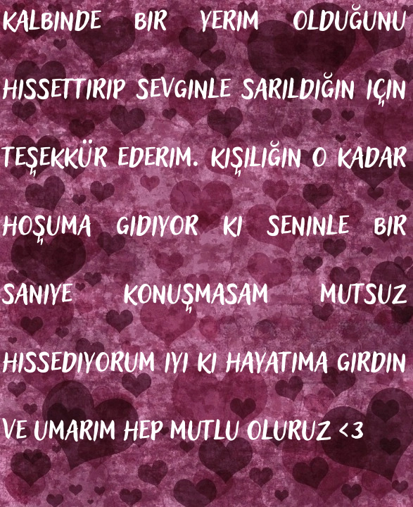

visibility
invert_colors
🏀
🤍
🎀
music_note
expand_more
Sen Benim Şarkılarımsın
Acıtır Gibi Severek
Aklımda Sorular
info
Moru Seviyorum (Temayi Degistir :3)
Tarayıcınız audio elementini desteklemiyor.
🌸
tıkla
✕
